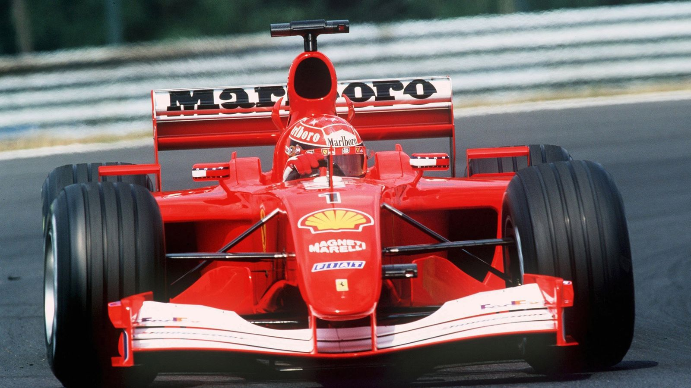

MICHAEL SCHUMACHER
Michael Schumacher è uno dei piloti più leggendari nella storia della Formula 1. Nato il 3 gennaio 1969 in Germania, ha vinto sette titoli mondiali, di cui cinque consecutivi con la Ferrari dal 2000 al 2004. Conosciuto per la sua abilità tecnica, la sua determinazione e il suo spirito competitivo, Schumacher ha stabilito numerosi record, tra cui il maggior numero di vittorie in gare e pole position. La sua carriera è stata segnata da momenti di grande successo, ma anche da controversie e incidenti. Dopo il suo ritiro iniziale nel 2006, è tornato a correre con la Mercedes dal 2010 al 2012 prima di ritirarsi definitivamente. Schumacher è ammirato non solo per i suoi successi in pista, ma anche per il suo contributo allo sviluppo della sicurezza nella F1. La sua influenza nel mondo delle corse è ancora sentita oggi.
